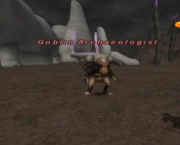

Level 75 reference · Zenith rules
|
Job: Notorious Monster |
 |

|
Zone |
Level |
Drops |
Steal |
Spawns |
Notes |
|
La Theine Plateau (J-8) |
30-75 |
1 |
A, L, S | ||
|
HP = Detects Low HP; M = Detects Magic; Sc = Follows by Scent; T(S) = True-sight; T(H) = True-hearing JA = Detects job abilities; WS = Detects weaponskills; Z(D) = Asleep in Daytime; Z(N) = Asleep at Nighttime | |||||
Notes:
- Spawns from trading any item to the ??? near the teleport crag until the mob loads; a player may initiate a trade of any number of items only once per game day.
- The closer the voice is to the ground when the ??? is examined determines how many more items must be traded before it spawns.
- If examining the ??? gives the message: "You hear a voice from right beneath the surface of the ground." then the NM will pop within the next item trade or two.
- The level of the NM can vary widely. The NM can range from level 30 to 75 and the level determined is completely random.
- Drops 1000 gil and always at least one Gold Beastcoin.
- Immune to Sleep.
- Special Attacks: Draw In, Frag Bomb (100-1500 damage AoE)
- According to the official update notes for the December 9, 2004 update, can see through Hide.
Adapted from Eden Wiki: Goblin Archaeologist · Contributors and history · CC BY-SA 4.0. Revision 46618. Layout, links and optional background text adapted for Zenith.